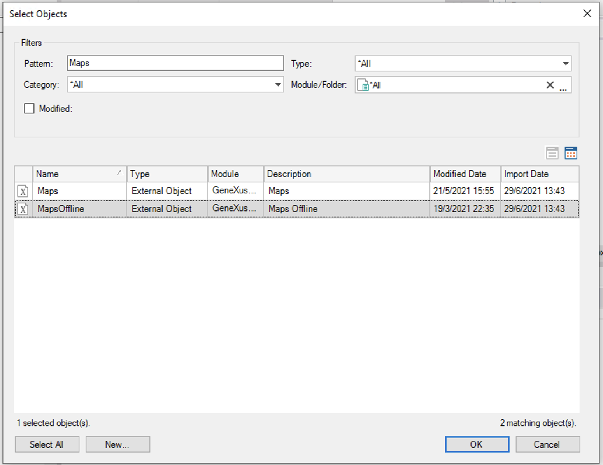
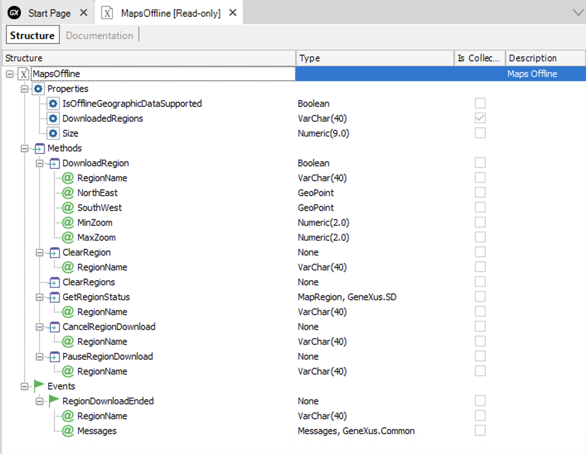
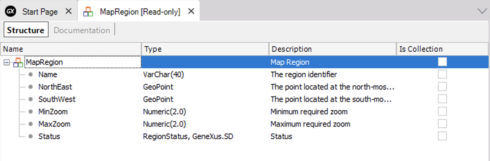

It is possible to download the mapping of an area and access it offline. This functionality is offered by mapping providers, such as Mapbox.
Google Maps APIs do not provide this functionality.
Generators: Android
A specific example is an application that collects points (geopoints) in rural areas with low connectivity. In this case, there is no connectivity to navigate the mapping of the site. Although mapping providers (Google, Apple, Baidu, Mapbox) offer a cache that provides offline access to areas that have already been navigated, this is a very sensitive mechanism. Zooming in is already a connection trigger to obtain the mapping.
Create a new MapsOffline External Object.

With the following methods, events, and properties:

MapsOffline.IsOfflineGeographicDataSupported: Boolean
Indicates whether the map provider being used supports downloading data for offline use.
MapsOffline.DownloadedRegions: Character Collection
Returns the list of names of the regions already downloaded.
MapsOffline.Size: Numeric (9.0)
Returns the space currently taken by the offline region database in the KB.
In Android, this file is Directory.ApplicationDataPath/mbgl-offline.db.
Boolean = DownloadRegion(Character regionName, Geopoint northEast, GeoPoint southWest, int minZoom, int maxZoom)
Parameters:
The second version will have parameter overloading and it will be possible to define the region by center and radius.
Boolean = DownloadRegion(Character regionName, Geopoint Center, Numerio Radio, int minZoom, int maxZoom)
Note: There is a restriction to parameter overloading when they have the same quantity and different types; that's why it is not implemented in the first version.
Cancels the download of a region pending download or in progress. It has no effect if the region does not exist or was already canceled.
Pauses the download of a region pending download or in progress. It has no effect if the download was already paused, canceled, or does not exist.
ClearRegions()
Deletes all downloaded zones from the device.
ClearRegion(Character RegionName)
Deletes the downloaded zones from the device, based on their names.
GetRegionStatus(Character regionName): MapRegion (new SDT)
The MinZoom and MaxZoom fields contain the current map zooming.
Event MapsOffline.RegionDownloadEnded(Character regionName, Messages messages) ... EndEvent
Returns the name of the region that has just been downloaded and the messages associated with the download (errors, warnings, and other information from the provider).
The Grid with Control Type = Maps has the following method:
MapGrid.GetVisibleRegion: MapRegion (new SDT)
Returns the Northeast and Southwest coordinates of the area displayed on the Grid.
From the application, the area displayed on the map with the specified zoom. For this, you must program something like having a Grid with Control Type = Maps and a "download" user event with the following code:
Event 'download'
&MapRegion = MapGrid.GetVisibleRegion()
DownloadRegion("MyCity", &MapRegion.GeoPointNE, &MapRegion.GeoPointSW, &MinZoom, MaxZoom)
endevent
Event MapsGrid.downloadRegionEnd("MyRegion")
&LocalNotificationsItems.Text = "Download Region successfully"
&LocalNotifications.Add(&LocalNotificationsItems)
LocalNotifications.CreateAlerts(&LocalNotifications)
EndEvent
Automatically download a region that the application will navigate.
For example, suppose there is a combo box of Cities or Neighborhoods in the App. Based on the user’s selection, a code like the following is invoked (in user event or Client Start):
Composite
GetRegionBoundary("MyCity", &geoPointNE, &geoPointSW, &MinZoom, MaxZoom)
MapGsOffline.downloadRegion("MyCity", &geoPointNE, &geoPointSW, &MinZoom, MaxZoom)
EndComposite
Note: GetRegionBoundary is a procedure that initializes the values to define the region. Returns the Northeast and Southwest extremes, and the minimum and maximum zoom of the area.

Name: Character
NorthEast: GeoPoint
SouthWest: GeoPoint
MinZoom: Numeric
MaxZoom: Numeric
Status {Queued = 1, Downloading, Downloaded, Paused, Canceled}
Since GeneXus 17 upgrade 4
| Backlinks |
| How To: Maps - Mapbox |